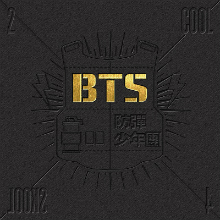
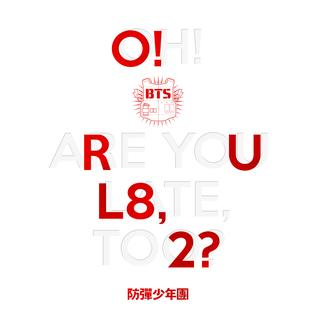
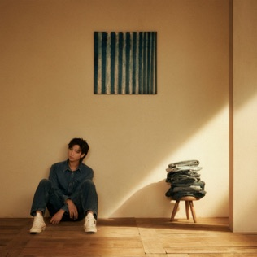

Introduction
Kim Namjoon born September 12, 1994, professionally known as RM, is the leader of BTS and one of the key figures behind the group's musical identity. Rising from the underground hip-hop scene as a teenager going by the name 'Runch Randa', he is recognized for his thoughtful lyricism, distinctive rap style, and intellectual curiosity, he joined BigHit Entertainment in 2010 and debuted with BTS on June 13, 2013 as the group's leader, after being scouted by Bang Si-hyuk, the CEO of Big Hit Entertainment in 2010, and played a significant role in shaping the group's direction., later becoming known as the 'Leader/Father of K-pop' for portraying his outstanding leadership and influence in the group and the K-pop industry as a whole.
RM has contributed significantly to BTS's songwriting and artistic direction. His leadership, creativity, and willingness to explore complex ideas through music have made him an influential figure both within the group and beyond. His impact extends well beyond music, as he is know for his interest in various artworks and recently was a co-curator of the recent RM x SFMOMA: Between You and Me museum exhibition. He has also been an advocate for mental health awareness, self-love, and social issues. His speeches at international platforms, including the United Nations, have highlighted his commitment to using his voice for positive change (He's GOATED!).
Early Beginnings: Before BTS
Long before becoming the leader of BTS, Namjoon was already making a name for himself in South Korea's underground hip-hop scene. Performing under the name Runch Randa, he collaborated with several underground rappers, including Zico, KIDOH and Supreme Boi. His early work included tracks such as Expensive Girl and Glory, which showcased his developing lyrical abilities and interest in hip-hop.
After joining Big Hit Entertainment in 2010, Namjoon spent approximately three years training before BTS's official debut. However, his time as a trainee involved much more than preparing for performances. He actively participated in songwriting, recording and producing, working alongside producers such as Pdogg and Supreme Boi while helping establish the musical identity that would eventually become BTS.

The Road to Debut
On June 13, 2013, BTS officially debuted with their single album 2 Cool 4 Skool, featuring the title track No More Dream. As the group's first member to join Big Hit and its leader, Namjoon played an important role in shaping the group's early musical direction. The album explored themes surrounding youth, ambition, societal expectations and the pressure placed on young people to follow conventional paths. Namjoon contributed significantly to its songwriting, helping establish the socially conscious approach that would become one of BTS's defining characteristics.
Just three months later, on September 11, 2013, BTS released their first extended play, O!RUL8,2?. Namjoon once again participated in writing several tracks, further establishing himself as one of the group's central creative forces. He also served as BTS’s main spokesperson in early interviews and teaser content before official debut, he helped develop BTS’s rap line identity and maintained a strong focus on combining socially conscious themes with energetic hip-hop beats while recording rap verses for pre-debut performance practice videos alongside SUGA and j-hope.
Highlighted Milestones

2 Cool 4 Skool
- Release date: June 13, 2013
- BTS's debut single album
- Featured No More Dream
- Explored youth, ambition and societal expectations

O!RUL8,2?
- Release date: September 11, 2013
- BTS's first extended play
- Continued the group's exploration of youth and individuality
The Artist Beyond BTS

Beyond his work with BTS, RM has pursued solo projects that showcase his versatility as an artist. He has released solo mixtapes, including "RM" (2015) and "Mono" (2018), which received critical acclaim for their introspective lyrics and experimental sound. These projects allowed him to explore personal themes and musical styles that differ from BTS's group work, further establishing his identity as a multifaceted musician. While his work with BTS remains a central part of his musical identity, Namjoon has consistently explored his individuality through solo projects.
Stage Name Evolution
In 2017, he officially adopted the stage name RM, moving away from Rap Monster because he felt the original name no longer represented the full scope of his identity and musical direction.
Musical Identity
His music often explores themes of identity, self-discovery, personal struggles, growth and the complexities of human emotions. Rather than limiting himself to one particular sound, he has experimented with different genres and artistic approaches, allowing his music to evolve alongside him.
Exploring Different Genres
Namjoon is a versatile artist whose musical exploration extends beyond hip-hop and rap into alternative R&B, indie, jazz, folk, neo-soul, funk, rock, shoegaze, and experimental music, constantly blending diverse influences to create a sound that reflects his evolving identity and artistic freedom.
Songwriting and Self-Expression
Namjoon is a deeply introspective songwriter who uses poetic lyrics, personal experiences, and honest reflections on identity, vulnerability, growth, and societal expectations to express his inner thoughts and connect with listeners on a profound emotional level.
RM's Musical Evolution
RM's solo discography provides a closer look at his personal experiences, thoughts and artistic development.

RM (2015)
Released: March 2015
RM was his first self-titled mixtape. With "Do You" serving as the mixtape's title track, it offered a more personal and unfiltered perspective on his experiences, exploring identity, ambition, self-reflection and the realities of pursuing music.
Notable Tracks: "Do You," "Awakening," "Joke", "God Rap"

mono. (2018)
Released: October 2018
Released in October 2018, mono. presented a more introspective and atmospheric side of RM's artistry. The playlist explored themes of loneliness, uncertainty, belonging and emotional vulnerability. The project achieved significant international recognition, reaching No. 26 on the Billboard 200.
Notable tracks: Moonchild, Forever Rain, Seoul (prod.HONNE)

Indigo (2022)
Released: December 2022
Indigo is RM's deeply personal debut studio album, a musical diary of his twenties that blends diverse genres and artistic collaborations to explore identity, vulnerability, growth, and the beauty of embracing one's authentic self. For example, the ninth track, "Wild Flower", which is a deeply emotional song about the desire for a quiet, authentic life.
Notable tracks: Wild Flower, Lonely, Change pt. 2, Closer
Through these projects, RM demonstrated that his identity as an artist extends far beyond his role within BTS.
TMI
- RM has an IQ of 148(...I know...insane)
- He is fluent in English, which he taught himself by watching the TV show "Friends."(not many can relate... eg. me)
- He is known for his love of books and often shares his reading recommendations with fans.(I tried to read one but it wasn't romance...)
- His nickname "God of Destruction" is a testament to his powerful presence and influence.(no it's not...(it's cause he broke everything within 3 feet of himself in their earlier years))
- He was actually meant to debut as a soloist initially chose BTS instead.
- He loves Jjajangmyeon. He once told us about how he snuck out to eat it when he was a trainee
Made with love for BTS and ARMY